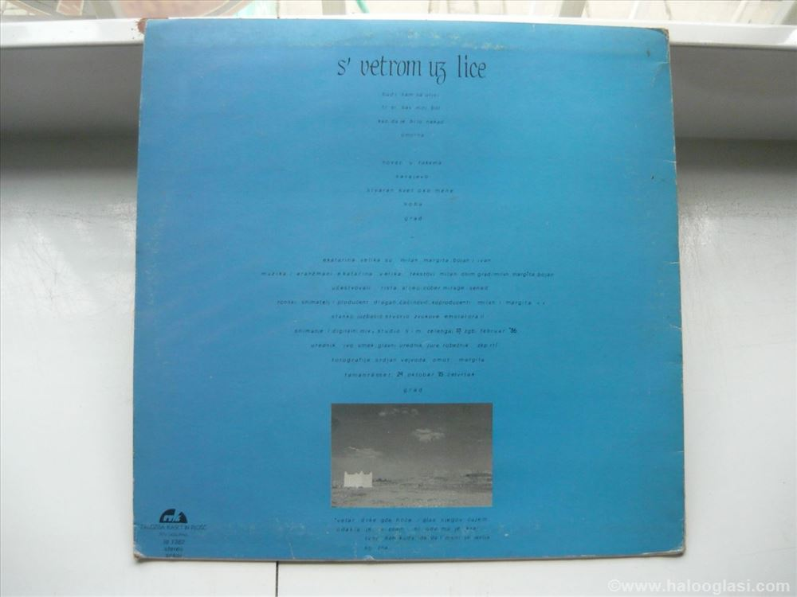
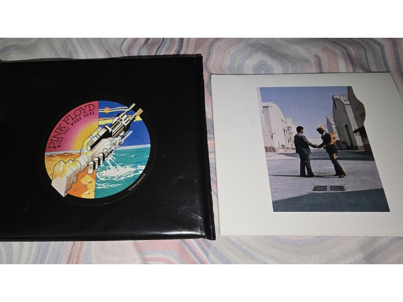

Koja je prva LP ploča?
Format LP predstavila je Columbia Records u junу 1948 u Njujorku (SAD). Prvi kataloški LP u mikro‑žlebu bio je ML 4001 — Mendelssohnov Koncert za violinu (Nathan Milstein; Philharmonic‑Symphony Orchestra of New York). Ovaj događaj obeležio je početak nove ere u reprodukciji muzike, jer je omogućio da se na jednoj ploči zabeleži gotovo čitavo muzičko delo bez prekida, što do tada nije bilo moguće. Prednost LP formata ogledala se u nekoliko ključnih aspekata. Vinilni materijal bio je elastičniji i dugotrajniji od šelaka, a mikro-žleb je omogućio znatno veću količinu informacija po jedinici površine. Time se trajanje jedne strane proširilo na preko 20 minuta, što je predstavljalo revoluciju za klasičnu muziku, džez i sve kompleksnije forme. Pored toga, poboljšan je i kvalitet zvuka — manje šuma, šire frekvencijsko područje i prirodnija dinamika. Uvođenje LP-a nateralo je čitavu muzičku industriju da se prilagodi novim standardima. Diskografske kuće počele su da reorganizuju svoje kataloge, a gramofonski proizvođači su ubrzano razvijali nove uređaje sposobne da reprodukuju mikro-žleb. Ubrzo je format osvojio i širu publiku, ne samo ljubitelje ozbiljne muzike, jer su LP izdanja omogućavala izvođačima da predstave svoje radove u koherentnim celinama, a ne samo kroz kratke singlove. Već naredne godine, 1949, pojavljuje se konkurentski format 45 rpm singla, ali zahvaljujući svojoj dužini i kvalitetu, LP je postao temelj albuma kao umetničkog i komercijalnog proizvoda. Time se oblikovala nova kultura slušanja muzike: umesto pojedinačnih pesama, publika je mogla da doživi zaokružene muzičke priče i koncepte.
Dimenzije i mesto pojavljivanja
- Prečnik: najčešće 12" (≈30 cm), postojale i 10" verzije.
- Brzina: 33 1/3 rpm.
- Mesto/period: lansirano u Njujorku 1948; ubrzo usvojeno globalno.
Već tokom 1950-ih LP je ušao u masovnu upotrebu. U tom periodu ploče od 10" polako nestaju iz ponude, jer su se 12" LP ploče pokazale praktičnijim rešenjem za celovečernje koncerte, džez albume i sve kompleksnije studijske produkcije. Gramofoni širom sveta prilagođeni su novom standardu, a diskografske kuće počele su sistematski da grade kataloge koji su omogućavali izvođačima da kroz LP predstave ne samo niz pesama već i celovit umetnički izraz. LP je time promenio samu percepciju muzike: ona više nije bila ograničena na kratke numere ili fragmente, već se slušala kao iskustvo u dužem formatu. To je doprinelo razvoju konceptualnog albuma, gde su numere međusobno povezane tematski ili dramaturški. Publika je od tog trenutka mogla da doživljava muzičko delo na način sličniji koncertnom iskustvu, ali u sopstvenom domu. Tokom 1950-ih LP se ustalio kao dominantan format za ozbiljniju i popularnu muziku. U prvim godinama glavni korisnici LP-a bili su ljubitelji klasične muzike i džeza, jer je upravo njima dužina trajanja od 20–25 minuta po strani omogućila da čuju čitave simfonije, koncerte ili duže improvizacije bez prekida. Ubrzo su i drugi žanrovi prepoznali prednost LP formata, pa su i izvođači popularne muzike počeli da objavljuju albume koji nisu bili samo kompilacije singlova, već pažljivo koncipirane celine. Veliku prekretnicu predstavlja uvođenje stereo zapisa krajem 1950-ih. Do tada su sve ploče bile monofonske, a stereo tehnologija donela je novi doživljaj prostornosti i dinamike zvuka. Slušaoci su mogli da osete orkestar raspoređen levo i desno, vokale izdvojene od instrumenata, što je muzici dalo sasvim novu dimenziju. Stereo LP-ovi isprva su bili skuplji i zahtevniji za reprodukciju, ali su ubrzo postali standard, naročito u vreme kada su hi-fi uređaji počeli da osvajaju kućna tržišta. Tokom 1960-ih LP je doživeo pravu ekspanziju. Rock’n’roll, pop i soul izvođači prihvatili su format i pretvorili ga u centralno sredstvo izraza. Albume poput Sgt. Pepper’s Lonely Hearts Club Band (The Beatles, 1967) ili Pet Sounds (The Beach Boys, 1966) oblikovao je upravo LP — dužina trajanja i kontinuitet stranica omogućili su izvođačima da stvaraju konceptualne i umetnički ambiciozne radove. Istovremeno, LP je postao simbol omladinske kulture: posedovanje kolekcije ploča značilo je deo identiteta i stila života. Sedamdesetih godina LP je ušao u zlatno doba. Produkcija ploča dostigla je neverovatne razmere, a izdavačke kuće ulagale su u omote koji su postali umetnička dela sama za sebe. Dvostruki LP, sa četiri strane i ukupnim trajanjem i do 90 minuta, otvorio je prostor za duža dela, live koncerte i retrospektive. Pored muzičkog sadržaja, vizuelni aspekt postao je jednako važan: veliki format omota pružao je prostor za fotografije, ilustracije i grafičke eksperimente, pa su mnogi dizajneri i umetnici pronašli svoje polje delovanja upravo u LP kulturi. Osamdesetih godina, iako su na tržištu počeli da se pojavljuju kompakt diskovi (CD), LP je i dalje ostao snažno prisutan. Zahvaljujući svojoj toplini zvuka i fizičkom prisustvu, mnogi ljubitelji muzike ostali su verni pločama. Ipak, s kraja decenije CD je postao glavni format zbog praktičnosti i otpornosti, pa je proizvodnja vinila naglo opala. Mnoge fabrike zatvarale su svoje pogone, a LP je ušao u period gotovo potpune marginalizacije. Ipak, priča o long play formatu tu nije završena. Tokom 1990-ih i ranih 2000-ih vinil je preživeo kroz DJ kulturu i underground scenu, gde su ploče bile nezamenljive za miksovanje i kontrolu zvuka. Od 2010-ih naovamo, LP je doživeo veliki povratak na svetskom tržištu. Kolekcionari, audiofili i nova generacija slušalaca otkrili su posebnu vrednost fizičkog nosača: taktilni doživljaj, umetnički omot, analogni zvuk sa blagim nesavršenostima koje CD i digitalni formati brišu. Danas se LP ploče ponovo štampaju u milionima primeraka godišnje. Novi izvođači objavljuju albume na vinilu paralelno sa digitalnim izdanjima, a stare kolekcije remasterovanih ploča vraćaju na scenu legendarne albume prošlog veka. Long play je tako prešao put od tehničke inovacije i kulturne revolucije do statusa simbola autentičnog slušanja muzike.
Najprodavanija LP ploča
Najprodavaniji LP album je Michael Jackson — Thriller (1982), sa rekordnim svetskim tiražima.
Katalog — LP
| # | Omot | Izvođač | Naslov | Godina | Label | Katalog br. | Format | Brzina | Prečnik | Država | Stanje | Cena | Napomena |
|---|---|---|---|---|---|---|---|---|---|---|---|---|---|
| 1 |  | Ekatarina Velika | S vetrom uz lice | 1986 | PGP RTB | 2123702 | LP | 33 1/3 | 12" | YU | VG+ | — | YU rock klasik |
| 2 |  | Pink Floyd | Wish You Were Here | 1975 | Harvest | SHVL 814 | LP | 33 1/3 | 12" | UK | EX | — | Poster + insert |